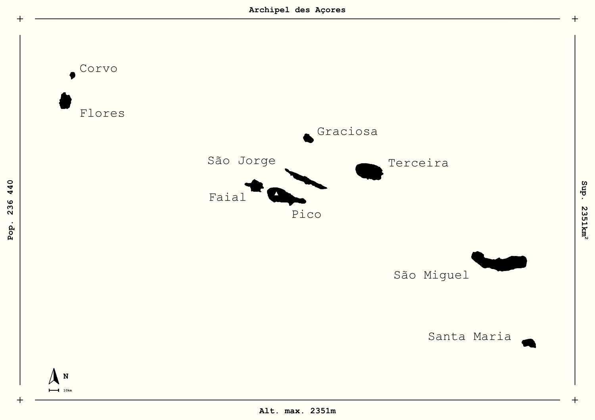
La terre, enfin… Après 15j de navigation humides nous avons hâte d’arriver. Nous entrons dans le port de Lajes, au sud-est de l’île de Flores, à l’ouest des Açores. Nous avons lu que la marina avait été détruite par une violente dépression quelques années plus tôt. Depuis, très peu d’infos ont été publiées. Alors nous nous glissons doucement entre les quais de ce petit port de pêche. Nos regards se lèvent pour contempler les hautes falaises qui nous surplombent. La baie est calme et nous ne sommes plus habitués au silence. Nous amarrons le bateau, coupons le moteur et laissons la quiétude prendre enfin toute la place. Nous jetons des regards hagards sur le port, le bateau et notre équipe. Ça y est, nous l’avons fait. Nous sommes partis mais surtout, nous sommes revenus. Nos yeux cernés ne masquent pas notre fierté d’avoir traversé par deux fois cette si grande étendue qu’est l’océan Atlantique.
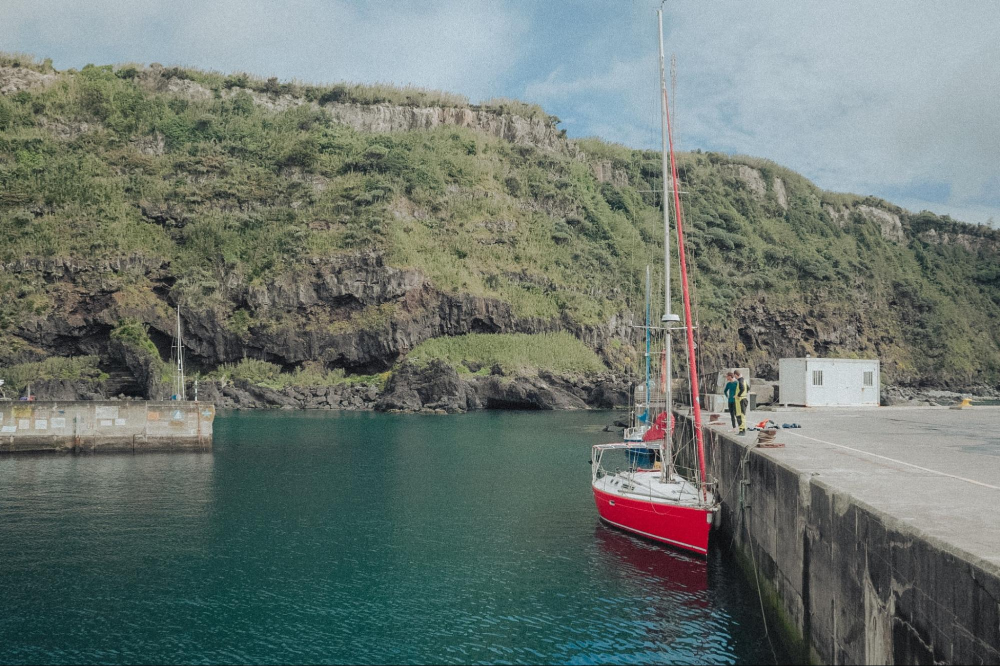
Pour fêter notre arrivée, nous sortons de quoi prendre un petit-déjeuner sur l’embarcadère de l’île. Le silence résonne et nous savourons nos tartines sur un sol stable. À peine ce repas se termine-t-il que Loann se jette dans le bateau pour laver les fonds. De l’eau s’est infiltrée et il est nécessaire de sécher et rincer les zones salées. Clément me lance les planchers et coussins que nous mettons au soleil sur le quai. Nous faisons de même avec nos vêtements de navigation. Nous rassemblons notre linge sale et rejoignons les installations sommaires en quête d’une machine à laver. Quand celle-ci démarre, une légère bruine commence à tomber. Elle ne s’arrêtera que le lendemain dans l'après-midi ce qui n’est pas l’idéal pour faire sécher du linge alors que le bateau est déjà humide. Mais bon, heureusement les douches sont chaudes. N’est-ce pas ? Eh bien non, elles sont glaciales, vraiment glaciales… Les Açores ne sont-ils pas capables de nous offrir une meilleure arrivée de transat’ que les Grenadines ? Si, quand même. Nous trouvons un restaurant dans lequel nous goûtons quelques spécialités locales et des burgers !
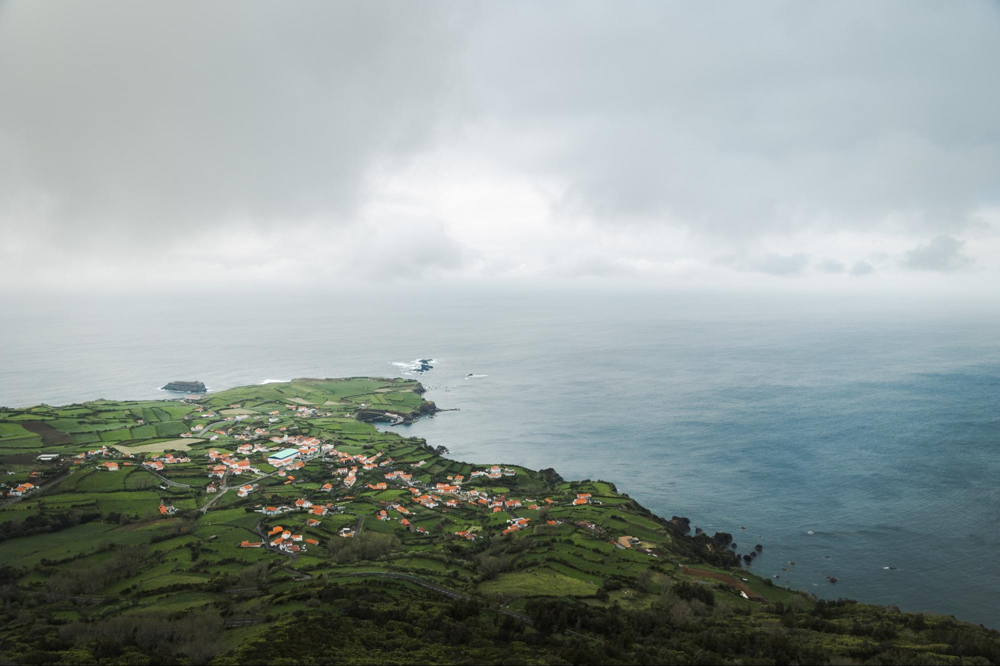
Après une grasse matinée bien méritée, nous discutons avec nos voisins qui nous proposent de partager le taxi qu’ils ont réservé. Le chauffeur de celui-ci nous explique l’histoire des îles et nous arrête sur plusieurs points de vue. La jolie côte que nous avions vue se dessiner la veille n’est pas cantonnée à l’ouest de l’île. Nous sommes impressionnés par les grandes prairies qui se jettent dans la mer. Arrivés à Santa Cruz, la plus grande ville de l’île, nous déjeunons dans un restaurant qui sert des pregos. Nous avions découvert ces sandwichs quelques mois plus tôt à Madère. Nous rejoignons ensuite l’aéroport pour y récupérer une voiture de location. La journée est déjà avancée, nous roulons quelques minutes sur une route sinueuse pour rejoindre Baia da Alagoa. Une plage de galets fait face à trois îlots dont la verticalité nous impressionne. Nous retournons au bateau en décidant de passer par le centre de l’île. Ce qui nous permet d’affirmer que les nuages des Açores sont aussi épais que la brume bretonne…
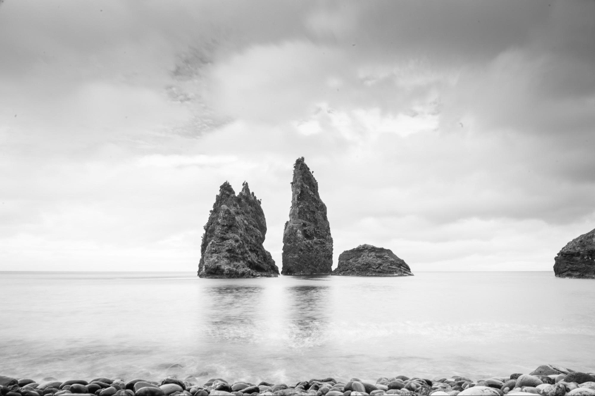
Comme nous jugeons qu’une nuit suffit à récupérer d’une transatlantique, nous nous levons de bonne heure le lendemain. En fait, c’est surtout que nous avons la voiture pour 48h et que nous voulons explorer chacun des recoins de Flores. Les nuages n’ont pas quitté leur position et c’est presque s’ils viennent chatouiller le haut de notre mât. Première destination : Fajã Grande. Une Fajã est une ancienne coulée de lave qui s’est jetée dans la mer et qui, en se solidifiant, a créé une petite parcelle de terre au bord de la mer. Ces formations présentent souvent un climat propice à la culture. Fajã Grande est partiellement dégagée mais nous ne distinguons pas le sommet des falaises qui l’entourent. Nous en profitons pour longer la côte et apprécions l’ambiance mystique du lieu. Nos appareils photos ont peu de répit ! La plage de galet sépare la mer de petits champs délimités par des murs de pierres volcaniques. Des vaches y paissent.
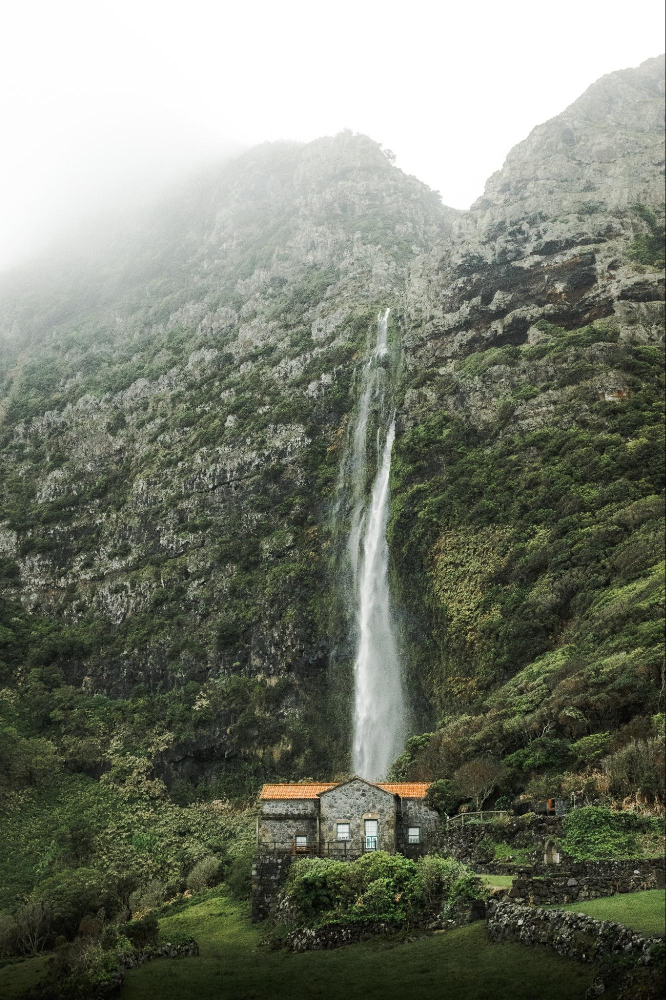
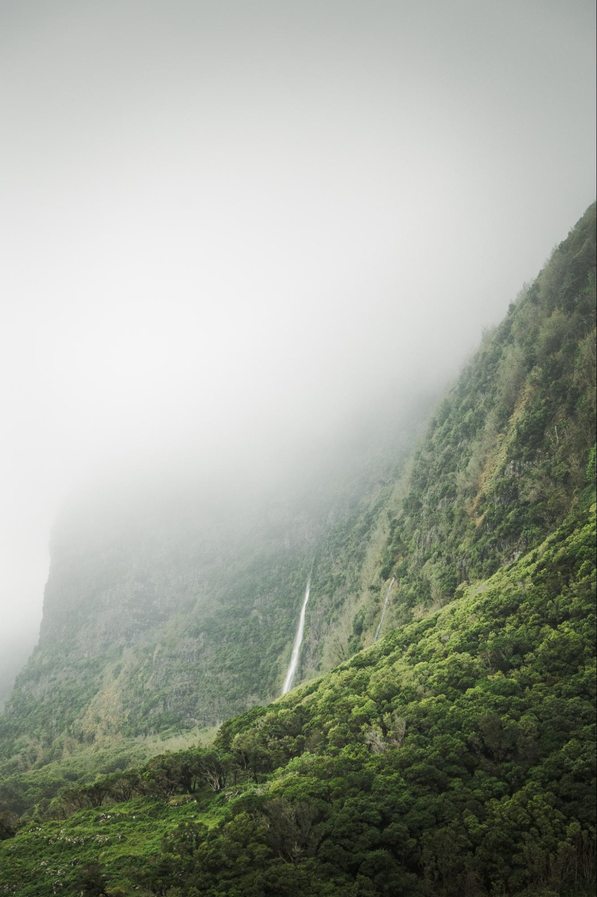
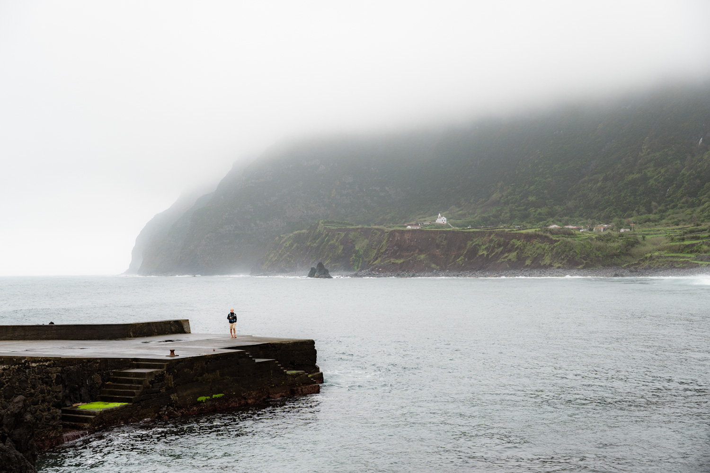
Nous déjeunons devant la mer en espérant que le plafond nuageux remonte pour nous permettre d’explorer le plateau. Une fenêtre nous semble s’ouvrir et nous en profitons pour rouler sur la côte ouest. Nous nous arrêtons à presque tous les points de vue aménagés et nous ne sommes jamais déçus. Nous faisons une petite halte dans le port de Ponta Delgada avant de nous promener autour du phare de Albarnaz, à la pointe nord de l’île. Des champs recouvrent les collines alentours et les parent d’une belle couleur verte. Nous nous arrêtons contempler le phare, profitant de la quiétude et de la vue grandiose. Nous abandonnerons l’idée de rentrer au bateau par les pistes qui traversent le centre de l’île. Ce n’est pas le moment de bloquer la voiture.
Pour notre dernière journée avec la voiture, le temps se dégage. Nous apprécions les différents points de vue de la côte sud-ouest qui sont dégagés pour la première fois. Au programme : orgues basaltiques et chutes d’eau. Ces dernières sont le lieu le plus touristique de l’île. Il faut dire que les cinq cascades qui se jettent dans le Poço da Ribeira do Ferreiro sont vraiment impressionnantes ! Surtout quand le soleil se montre. Le temps de rendre la voiture approche alors après un court arrêt sur l’un des sommets de l’île. Nous rejoignons Ponta Delgada de nouveau. Cette fois la visibilité est excellente ! Nous admirons Corvo, petite île au nord de Flores. Nous retournons chez le loueur à Santa Cruz et attrapons un bus. Nous avons la bonne surprise de le voir s’arrêter devant le lycée. Les élèves montent et la plupart saluent chaleureusement le chauffeur. Nous apprécions cette petite immersion dans la vie des îliens.
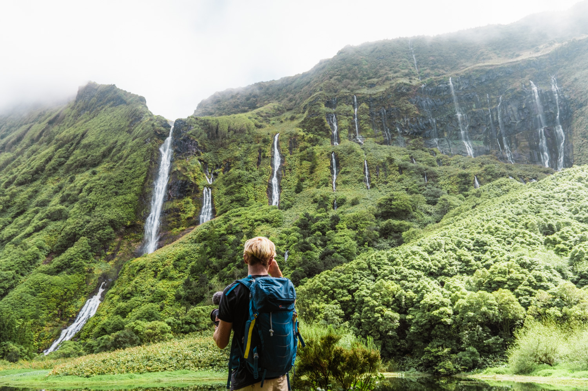
Les jours suivants seront consacrés au nettoyage du bateau, à de petites réparations et à nos travaux de communication. Nous prenons quand même le temps d’aller plonger dans une eau glaciale. Loann chasse un mulet que nous cuisons sur un barbecue. En parallèle, nous reprenons contact avec Météo France qui nous informe avoir une bouée défectueuse dans les parages. Elle est sur la route vers les autres îles des Açores. Ça tombe bien !
Départ dans l'après-midi, la mer est calme et des dauphins glissent le long de l’étrave. Nous avons hissé le spi, nous permettant de rejoindre la dernière position connue de la bouée qui date déjà de la veille. Chacun prend son quart et au milieu de la nuit, Clément allume notre téléphone satellite. Toujours pas de nouvelle position… Si nous n’obtenons pas de mise à jour de l’emplacement de la bouée au lever du jour, nous aurons de grandes difficultés à localiser cet objet dont nous ne connaissons ni l’aspect ni la vitesse de dérive depuis 48h.
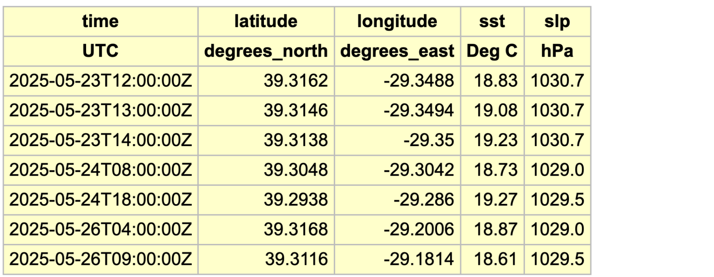
Heureusement, nous observons une mise à jour du site de Météo France à 4h avec une nouvelle position. Nous sommes tout près ! Nous affalons les voiles et démarrons le moteur. Nous avançons tranquillement vers notre objectif, nos regards balayant l’horizon. « Là ! Là là là ! » nous crie Loann. En effet un petit tube blanc émerge de l’eau entre les vagues. Sans le perdre de vue, nous faisons demi-tour puis reculons pour présenter la jupe. Loann l’attrape et la hisse à bord. La raison de son dysfonctionnement nous apparaît de suite : elle est couverte de coquillages ! Lorsque le câble qui la retient à son ancre flottante est à bord, nous quantifions le poids ajouté par tous ces passagers clandestins. Après l’avoir délivrée, nous attachons la bouée sur la jupe et faisons cap vers São Jorge, bien satisfaits d’avoir mené cette mission avec succès.
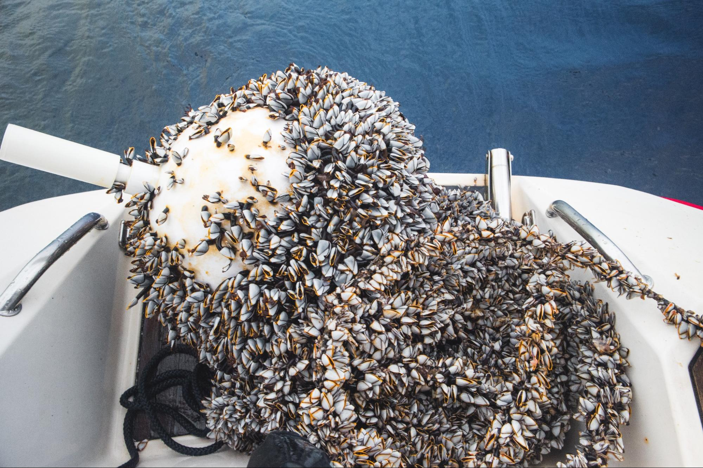
La nuit en mer a été courte alors nous sommes bien heureux d’être installés confortablement dans le port de Velas, qui est presque vide. Mais nous avons hâte d’explorer l’île. Ce grand fuseau, dont on dit qu’il est un dragon endormi, qui barre l’archipel nous intrigue. Nous trouvons un loueur de voitures et partons en milieu d’après-midi vers les crêtes. Notre vaillante citadine est maniée d’une main de chef par Clément dans les chemins qui surplombent São Jorge. La température s’est refroidie et les nuages nous laissent voir l’île par intermittence. Nous filons ensuite vers le nord pour observer le coucher de soleil. Un rapide arrêt à un point de vue nous permet d’observer le Pico qui commence à se parer de belles couleurs oranges. Nous poursuivons notre route avec le soleil comme guide. Nous arrivons un peu tard au phare mais Clément lance quand même le drone pour capturer les dernières lumières.
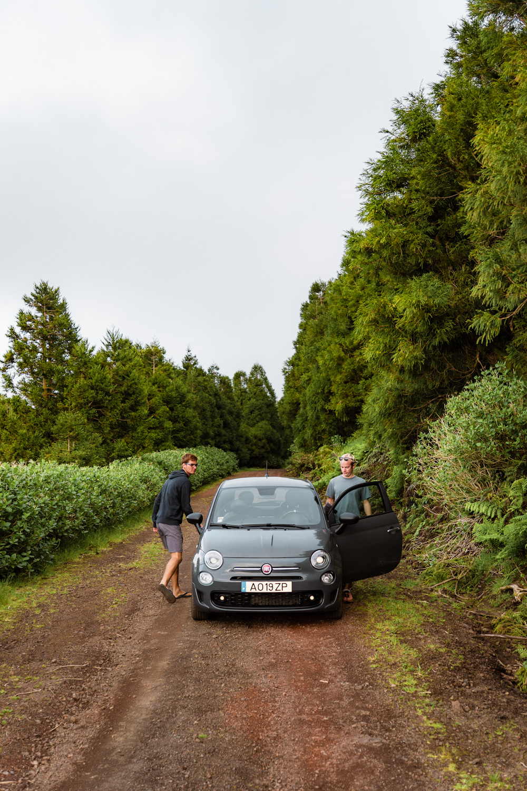
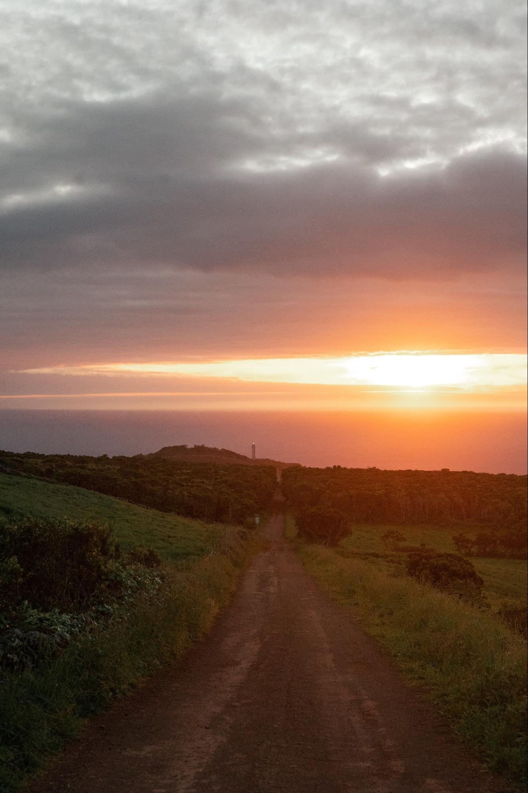
La matinée du lendemain est consacrée à l’exploration de la Fajã do Santo Cristo. Nous longeons la côte sur un chemin de terre rouge, traversant des canaux qui doivent se remplir d’eau à la moindre pluie sur le plateau surplombant. Heureusement, le temps est gris mais pas humide. Nous traversons deux Fajã avant d’arriver à notre objectif : un spot de surf bien connu de l’île. Pas de vague aujourd’hui mais la possibilité de prendre du recul sur les falaises nous comble. Nous mettons ensuite le cap vers l’est. Y siège un phare qui domine une petite île. Nous lisons que les vaches qui y séjournent doivent y accéder à la nage. En parlant de bovin, nous ne pouvons quitter São Jorge sans visiter une de ces coopératives laitière. Nous en visiterons en fait deux, plus par manque de temps que d’intérêt. Les Açores sont connus pour leurs produits laitiers, notamment leur fromages, ce qui n’est pas étonnant vu le nombre de vaches dans les champs.
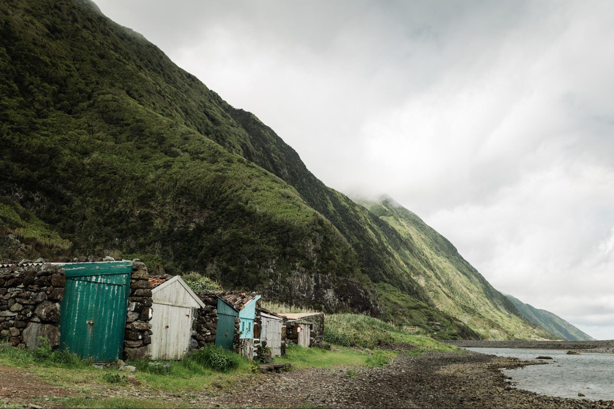
Les jours suivants sont consacrés à travailler sur un projet audiovisuel que nous vous révélerons prochainement. Nous profitons quand même d’une journée ensoleillée pour grimper le sommet le plus proche du port : le Morro Grande. Comme d’habitude, les nuages s’inviteront à la fête ne nous permettant pas de voir les dernières lumières du jour.
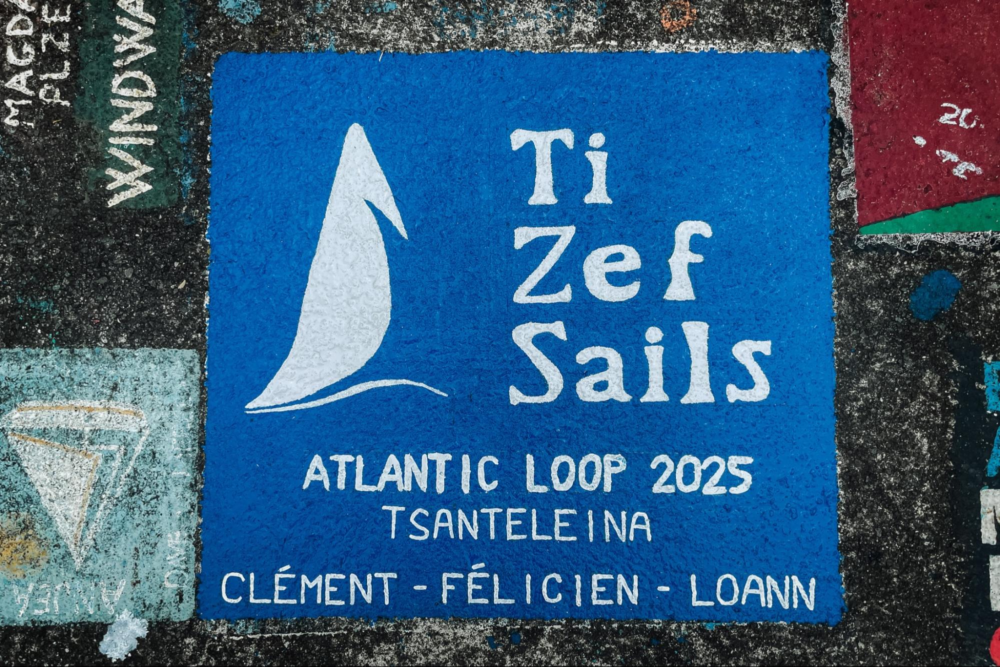
Nous avons jeté l’ancre dans le port d’Horta. Cela faisait longtemps que nous n’avions pas vu autant de bateaux ! Ce port est très célèbre des navigateurs au long cours qui s’y arrêtent pour couvrir les digues de dessins représentant leur aventure. Nous y resterons quelques jours le temps de faire des courses de matériel, de rencontrer d’autres navigateurs au fameux Peter’s cafe sport et, bien sûr, de peindre notre logo dans le port. Une petite excursion au Faial do Capelinhos nous permet de découvrir un joli musée retraçant l’histoire de cette île qui a émergé de la mer en 1957 avant d’être rattachée à Faial par des éruptions successives. Cet événement marquera la fin de la chasse à la baleine dans cette partie de l’île qui en était particulièrement propice.
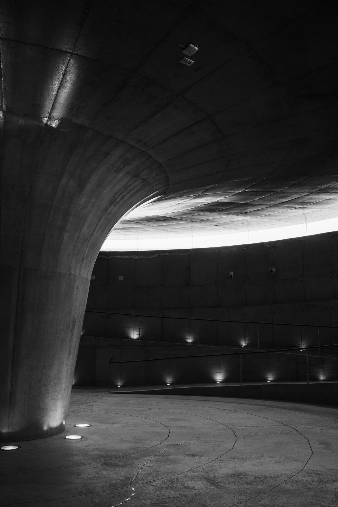
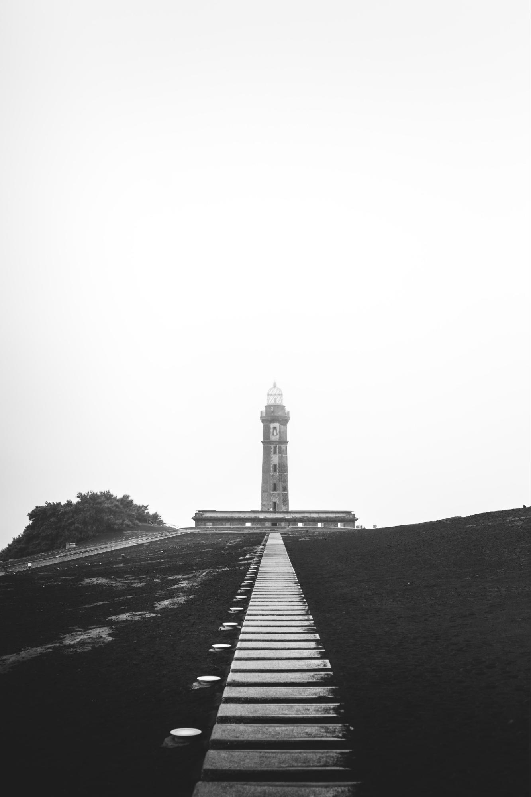
Il y a peu de ports sur Pico alors nous sommes très heureux de nous voir attribuer une place au ponton de Lajes. Clément regarde ce que nous pouvons faire sur l’île et nous propose une promenade, jusqu’à… une coopérative laitière. Bon, d’accord Clément, on t’accompagne. Mais c’est bien parce que c’est toi ! Nous longeons la côte entre roche volcanique, pins et terre rouge.
Mais le vrai objectif de notre escale est de grimper le Pico, le sommet du Portugal. Et oui, avec ses 2351m d’altitude, il domine la contrée natale de Vasco de Gama. Le vrai objectif de notre ascension c’est de voir un coucher et un lever de soleil depuis le sommet. Sauf que depuis le port, le sommet semble constamment dans les nuages. Si vous avez lu nos récits, vous savez que nous ne pouvons pas faire d’ascension sans emporter avec nous des nuages. Alors cela vaut-il bien le coup de bivouaquer tout là haut ? Nous verrons… Départ en fin de matinée, nous attrapons un bus qui nous laisse au pied du Pico. Nous commençons par descendre pour manger dans un fast-food. Si l’idée de nous voir descendre nous remplir le ventre avant de grimper vous semble être une redite, c’est parce que c’est ainsi que nous avions commencé notre trek à Madère. Nous sommes alors confiants sur notre capacité à faire du stop pour être accompagnés jusqu’au départ de la randonnée. Une heure et demie plus tard, après avoir grimpé 700m depuis le restaurant, notre assurance est assez basse. Jusqu’à ce qu’un fermier passe par là et nous propose de nous déposer au départ de la randonnée. En fait, nous nous sommes plutôt mis au milieu de la route et avons arboré nos têtes les plus dépitées pour qu’il ait pitié de nous et nous emmène dans sa benne. Mais enfin le résultat est le même. L’ascension du Pico est réglementée et les gardes du parc naturel font remarquer à Loann que ses chaussures ne sont pas adaptées à l’ascension. Cette fois nous sommes vraiment dépités… Heureusement, il parvient à trouver des chaussures oubliées et nous pouvons nous lancer sur le chemin.
Avec déjà 700m d’ascension dans les jambes, nous débutons les 1400 « derniers » mètres. Le sentier se complique rapidement et nous nous retrouvons bientôt à mettre nos mains pour nous hisser sur les coulées de lave solidifiée. Nous entrons dans les nuages. En sortirons-nous ? Oui ! Nous surplombons une mer de nuages qui s’étend jusqu’à l’horizon. La montée n’est pas plus facile mais nous sommes revigorés d’optimisme. Surtout, nous sommes plus rapides que l’estimation donnée par les gardes du parc. Nous allons donc sûrement pouvoir monter nos tentes avant d’observer le coucher du soleil.
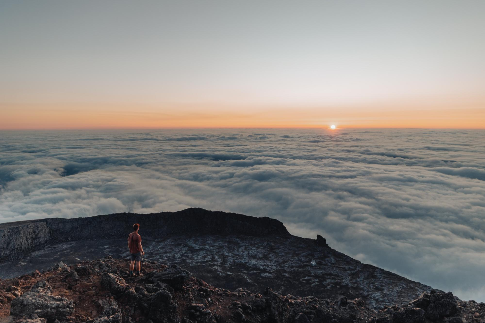
En effet, nous débouchons bientôt sur le cratère. Une vaste étendue de pierres volcaniques avec même une tâche de neige ! Nous installons nos tentes près de celle-ci puis grimpons les dernières dizaines de mètres jusqu’au vrai sommet. Des fumerolles émergent, nous permettant de contempler le soleil couchant sans avoir froid. Nous profitons d’un des plus beaux spectacles que ce voyage nous ait offert. Après un repas de plats lyophilisés, nous nous couchons, bien fatigués par cette intense journée.
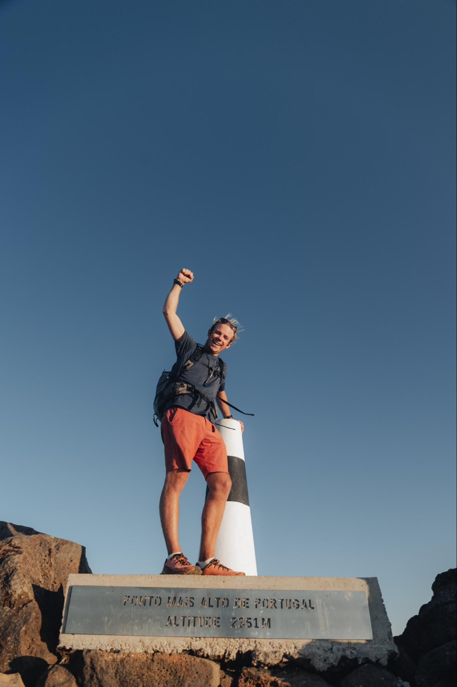
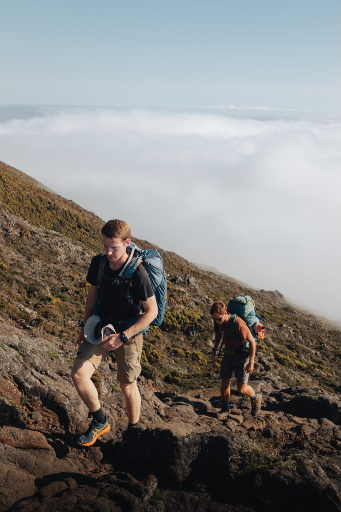
Le réveil sonne à 6h15. Nous grimpons de nouveau au sommet pour voir le soleil se lever. Alors que nous étions presque seuls la veille, c’est plusieurs dizaines de personnes qui se massent au sommet ce matin. Le spectacle n’en est pas moins splendide. Après avoir rangé nos tentes, nous débutons la descente. L’ascension d’hier nous fait redouter que la descente soit glissante, voir dangereuse. En fait, en prenant soin de marcher sur les coulées de lave, nos chaussures adhèrent et nous sommes capables de descendre de fortes pentes sans risquer de glisser. Nous sommes pris en stop par deux voitures consécutives, nous permettant de redescendre rapidement à Lajes retrouver le bateau. Épuisés, nous vidons nos sacs puis allons nous coucher après le déjeuner.
En fin d’après-midi, nous levons les amarres direction Lajes. Pourquoi ? Pour espérer voir des cétacés. Des agences de tourisme organisent des tours en mer deux fois par jour et les guides nous disent voir quotidiennement des cachalots, des baleines à bosses et des rorquals. Nous partons donc faire un tour dans la baie qui fait face à Lajes. Celle-ci est propice à l’observation de cétacés car elle se situe entre deux bassins de grande profondeur entre lesquels les mammifères transitent. Malgré notre volonté nous ne verrons que des dauphins. Mais quel spectacle ! Les dauphins communs apprennent aux petits à chasser et des centaines de puffins anglais (oiseaux de mer) les entourent, plongeant quand une opportunité se présente. Nous réalisons plusieurs enregistrements avec notre hydrophone.
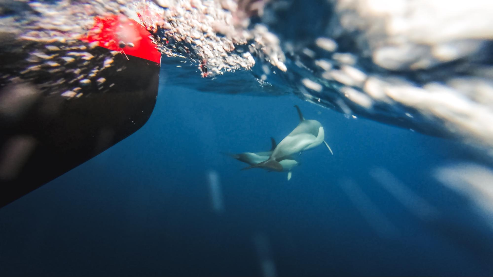
Comme le port est plein, nous décidons de commencer par un petit mouillage coincé entre l’île de São Miguel et Ilha Franca. Ce cratère de volcan semi-immergé est une réserve naturelle. Nous n’avions pas été au mouillage depuis Saint-Martin aux Antilles et nous apprécions être de nouveau seuls. Et comme à Saint Martin, nous sommes accueillis par la pluie. Nous plongeons et Clément et Loann me racontent avoir vu un banc immense de sérioles leur tourner autour. Magique !
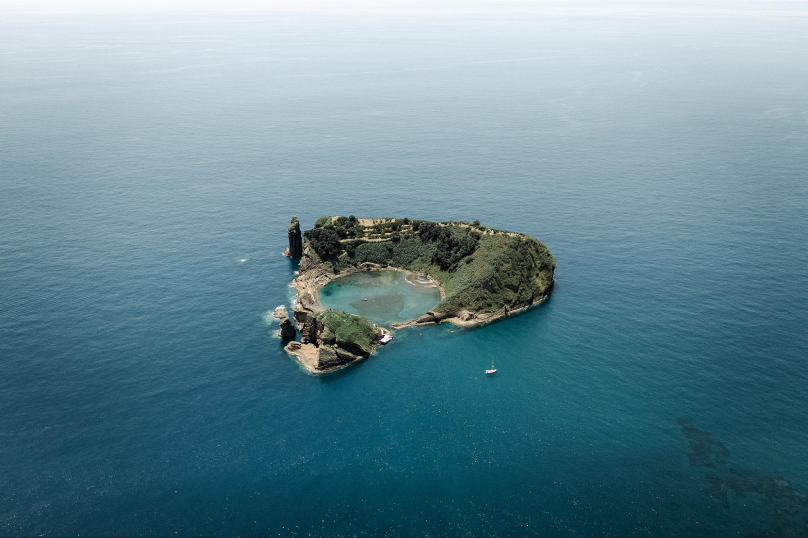
Nous nous glissons quelques jours plus tard dans le port de Ponta Delgada. Nous commençons déjà à anticiper notre retour en France et, comme nous voulons arriver un week-end, nous guettons une fenêtre météo qui commence à se profiler. Pendant une petite semaine nous ferons les quelques préparatifs nécessaires à notre dernière navigation. Nous en profitons également pour visiter l’île qui, malgré le nombre de touristes, est pour nous loin d’être la plus jolie de l’archipel. Nous sommes quand même très curieux d’en apprendre plus sur les plantations de thé et d’ananas. Nous visiterons les deux, nous permettant de conclure notre exploration culinaire des Açores.
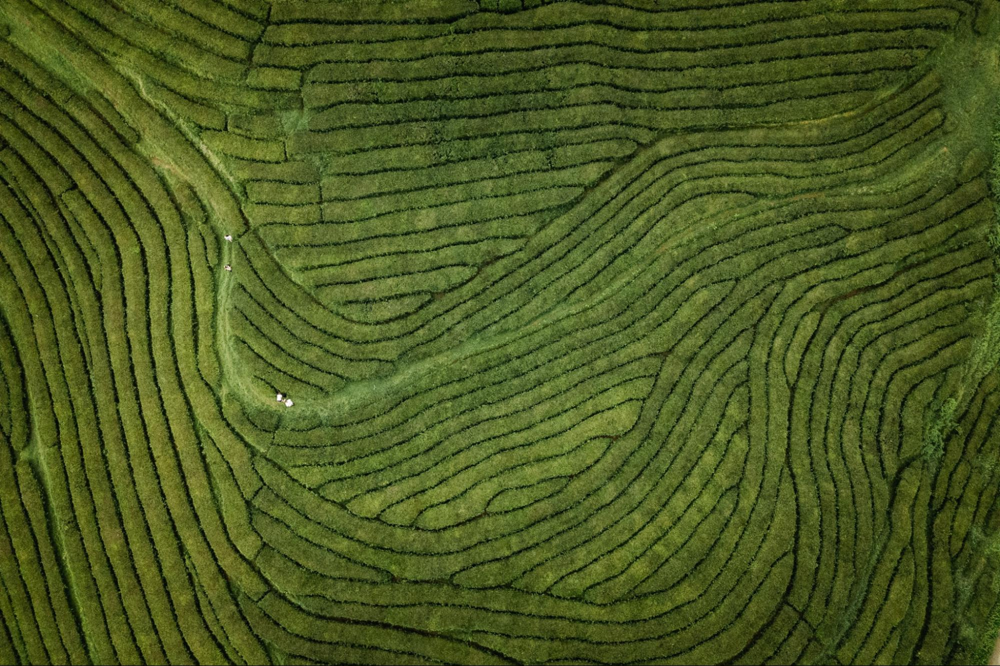
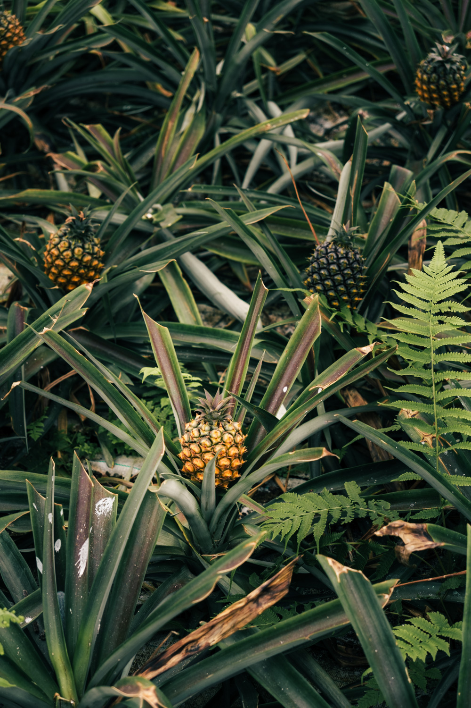
Allez Tsanteleina, tu nous as bien porté jusqu’ici, une dernière et tu auras le droit à un repos bien mérité. Nous partons dans une mer formée après avoir contourné l’île. Cela durera pendant deux jours qui seront heureusement un peu plus secs que ce que nous avions vécu pendant la transat. N’empêche, nos tenues de navigations sont bientôt gorgées de sel et donc constamment humides.
Pour nous consoler, les animaux marins viennent nous tenir compagnie. C’est presque une routine : Clément nous annonce chaque matin qu’il a vu des baleines tout autour du bateau. Avec Loann, nous n’en voyons aucune. Heureusement, c’est alors que nous sommes tous les deux dans le cockpit qu’un joli thon germon mord à la canne. D’une belle taille, nous en mangeons pendant deux jours à chaque repas. Ensuite, nous remettons la canne et de nouveau un autre thon. Celui-ci nous durera jusqu’à l’arrivée, de quoi ne pas entamer le troisième que nous pêcherons quelques jours avant la fin de notre voyage et que nous partagerons avec ceux venus nous accueillir à Brest.
Nous terminerons cette navigation en longeant pendant deux jours une ligne interminable de cargos reliant la pointe bretonne à la pointe espagnole. Alors sous spi, nous sommes attentifs à ne pas glisser sur leur route mais à rester parallèle. Le spectacle est impressionnant. Nous sommes habitués à naviguer des jours et des jours sans croiser de bateau et voilà qu’il y en a à perte de vue. La nuit, leurs feux tracent une guirlande que nous suivons. Ces derniers jours sont rouleurs : le bateau se balance de gauche à droite, malmené par des houles croisées qui ne veulent pas s’aligner avec le vent. 48h avant d’arriver, nous réduisons la voilure. Nous avions annoncé une arrivée le samedi dans la matinée. Nous nous y tiendrons.
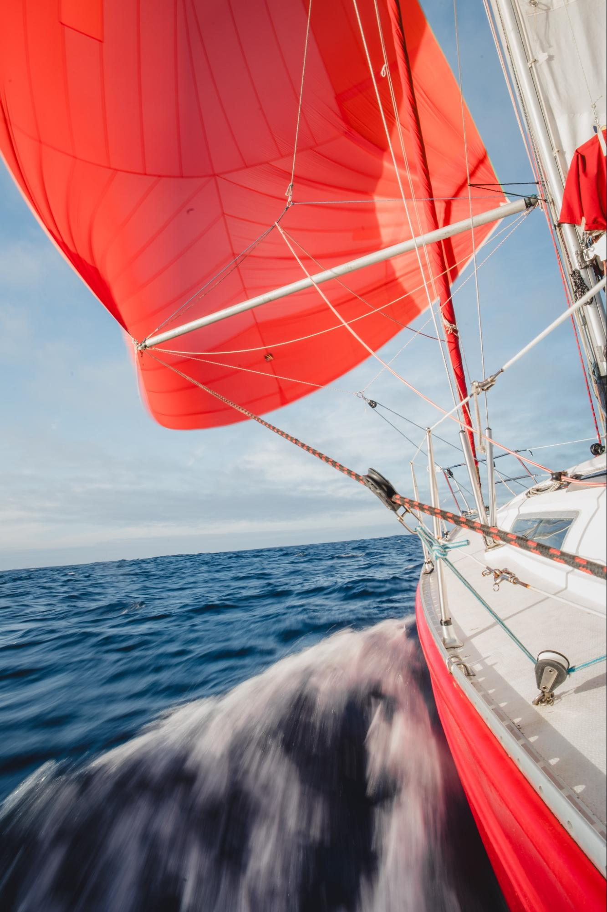
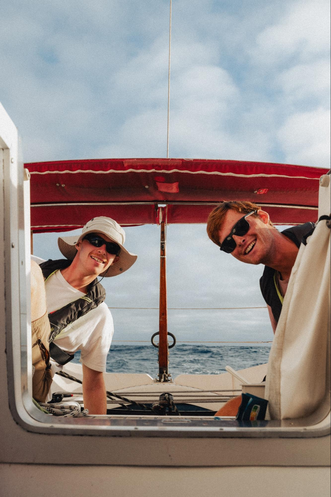
Nos derniers quarts se passent dans le calme. Nous sommes en mer d’Iroise avec uniquement notre vaillant génois déroulé et nous glissons dans un vent très léger. Nous observons les lumières de la côte se rapprocher. Nous connaissons la majorité des villes dont émanent ces lueurs mais elles paraissent pourtant étrangères. Il y a 9 mois de cela, nous quittions ce même port après un mois de préparatifs intenses et voilà que nous recoupons notre route. Les trois jeunes marins que nous sommes n’ont rien à voir avec ceux qui quittaient leur pays un an plus tôt.
Quand le phare du Petit Minou se découvre au travers de la brume, un étrange sentiment s’empare de nous. Nous avons hâte de retrouver nos proches pour partager nos anecdotes mais l’idée de s’amarrer pour la dernière fois au quai de Brest nous fait déjà regretter les aventures et les rencontres fabuleuses que nous a offertes ce voyage. Je crois que c’est ce sentiment que chante Cesaria Evora quand elle fredonne Sodade...
Nos récits s'arrêtent ici. Un immense merci à celles et ceux qui nous auront lus, en particulier à ceux qui nous auront donné leur retour. Nous espérons que ces mots inspireront d'autres navigateurs et permettront à quelques lecteurs de s'évader le temps d'un instant.
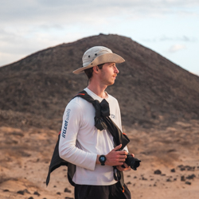